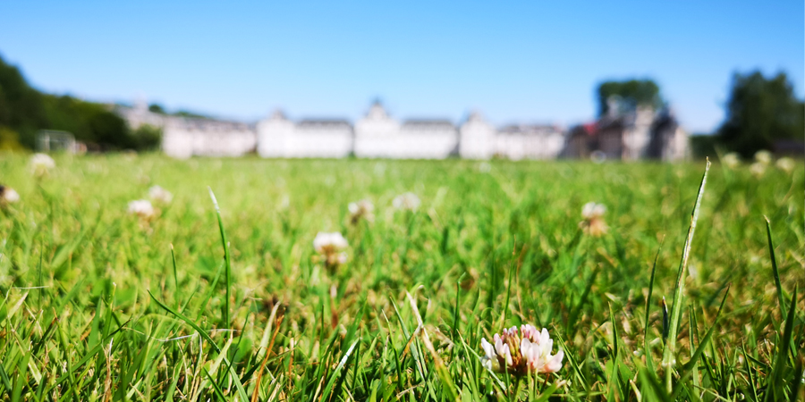

Wild Fest

Quam ob rem vita quidem talis fuit vel fortuna vel gloria, ut nihil posset accedere, moriendi autem sensum celeritas abstulit; quo de genere mortis difficile dictu est; quid homines suspicentur, videtis; hoc vere tamen licet dicere, P. Scipioni ex multis diebus, quos in vita celeberrimos laetissimosque viderit, illum diem clarissimum fuisse, cum senatu dimisso domum reductus ad vesperum est a patribus conscriptis, populo Romano.